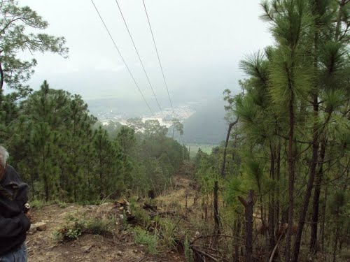

<!DOCTYPE html>
<html lang="es">
<html>
   
        <head>
    <TITLE>WEBSITE CECYMAGIC Alex_rz</TITLE>
    <link rel="icon" href="Logowebsite.jpeg" type="image/jpeg">
  </head>
</html>

<head>
    <meta charset="UTF-8">
    <meta name="viewport" content="width=device-width, initial-scale=1.0">
    <title>WEBSITE CECyMagic </title>
    <link href="https://cdn.jsdelivr.net/npm/bootstrap@5.3.3/dist/css/bootstrap.min.css" rel="stylesheet">

    <style>
    .card-img-top{
        height: 700px;
        object-fit: cover;
    }
     .card{
        height: 100%;
     }

   h1{
      color: rgb(99, 45, 25);
      font-family:cursive;
   }

    p{
      color: rgb(117, 9, 9);
      text-align:justify;
      font-family: Cambria, Cochin, Georgia, Times, 'Times New Roman', serif;
   }
   

    </style> 
</head>
 
<body>
        <div class="container text-center my-5">
        <h1>RUTAS ECOTURISTICAS</h1>
        <h4 style="color: rgba(21, 87, 18, 0.641);">¡
           Valle de Bravo !</h4>
        </div>

        <div class="container my-5">
        <div class="row g-4">

        <div class="col-md-6">
        <div class="card h-100 shadow">
          
           
        <div class="card-body text-center">
            <h5 class="card-title">
             VIDEO </h5>
            <a href="https://vt.tiktok.com/ZSpCFGV14/">VER VIIDEO</a>


          <video controls>
            <source src="video3.mp4" type="video/mp4">
          </video>

        </div>
        </div>
        </div>
     
        

        <div class="col-md-6">
        <div class="card h-100 shadow">
          
           
        <div class="card-body text-center">

             <h5 class="card-title">
            Ruta Avándaro - Pinal del Marquesado </h5>
            <p class="card-text">
             La ruta entre Avándaro y Pinal del Marquesado, en el municipio de Valle de Bravo, es un recorrido rodeado de bosques de pino y encino que permite disfrutar de algunos de los paisajes más representativos de la región. Se trata de un trayecto muy apreciado por senderistas, ciclistas y aficionados al turismo de aventura, gracias a sus caminos de montaña, vistas panorámicas y entornos naturales bien conservados. La zona combina tranquilidad, aire puro y contacto directo con la naturaleza.
            </p>
            

            <p class="card-text">
             Además de su atractivo paisajístico, la ruta conecta con diversos senderos y puntos de interés cercanos a Valle de Bravo. El recorrido presenta desniveles moderados y atraviesa áreas boscosas que ofrecen excelentes oportunidades para la observación de flora y fauna local. Es una opción ideal para quienes buscan actividades al aire libre y experiencias ecoturísticas lejos de las zonas más concurridas.
            </p>


            <h5 class="card-title">
            LAGUNA NEGRA</h5>
            <p class="card-text">
              La Laguna Negra es uno de los parajes naturales más atractivos de la zona de Valle de Bravo. Se trata de una laguna rodeada de bosques y montañas, conocida por su ambiente apacible y su belleza escénica. Diversas rutas de senderismo y ciclismo conducen hasta este cuerpo de agua, permitiendo disfrutar de miradores naturales y paisajes de gran valor ecológico durante el trayecto. 
            </p>
           
           <p class="card-text">
             La ruta hacia Laguna Negra es especialmente popular para actividades de aventura y ecoturismo. Los visitantes pueden recorrer caminos de terracería y senderos forestales que atraviesan áreas poco intervenidas, ideales para la fotografía de naturaleza y la observación del paisaje. La laguna es descrita como un sitio semivirgen y de gran atractivo natural, convirtiéndose en una excelente alternativa para quienes desean conocer un rincón menos conocido de Valle de Bravo.  
            </p>
          


        </div>
        </div>
        </div>

        </div>
        </div>
<a href="index.html"> REGRESAR </a>>
      </body>
</html>
    
